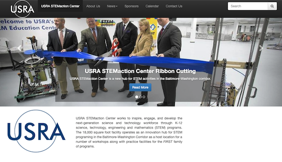
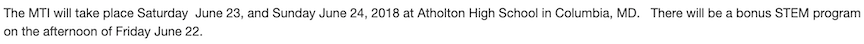
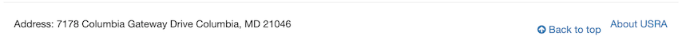
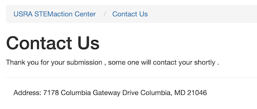

USRA STEMaction Center is a non-profit organization that works to inspire, engage, and develop the next generation science and technology workforce through K-12 science, technology, engineering and mathematics (STEM) programs through events and activities for youth and their families in the Baltimore-Washington area.
STEMaction’s website clearly define and fulfill the purpose of its end-users. Every page of the website has relevant content that satisfy the need of the users. The website has an overall good appearance. It has a minimalist layout. The content is neat and orderly. It has consistent headers, logo, and images. The white background, blue header, and dark text contrasts each other well. However, this seems very basic and rather boring.
STEMaction simple navigation menu at the top of the page helps users find the appropriate content by breaking it down to categories in a hierarchical structure. This makes it easy for visitors to quickly find the information that are of interest to them. The search bar is also strategically placed on the top right corner of every web page on the website. This increases usability as it allows users to search for particular information on the website at any time during their stay.
Directly underneath of the navigation menu is a slideshow that showcases the organization’s latest events with a call-to-action “Read More” button. The size of the button is a little small here. The images in the slideshow is weirdly formatted. On a smaller resolution, the images are fine. However, when viewing on a larger resolution, the images are stretched and cuts off the image. This is unimpressive and looks unprofessional.
The News section is out of date. The latest news item is from some time in the early 2018. It would behoove the organization as well as the users to have the publish date available. STEMaction fell short on updating content to the users. Publishing a blog or post on a regular basis could increase user engagement through the content as users are interested in unique information that they cannot read elsewhere. A few errors were also a spotted in the 2nd Annual Maryland Tech Invitational post.
The use of white space on the website creates a balanced layout and clearly shows elemental effects that attracts users’ attention. There is enough spacing in between words and segments on the website that makes it easier to read, minus a few mistakes here and there. The font being used is Helvetica which is highly readable. The font sizes throughout the website are at appropriate boldness. The text is intuitive and informative.
The footer is lackluster. The address of the organization is displayed. This information belongs in the Contact Us page. Some social media links here to connect to the users would be ideal. The “Back to top” button is not static. It is floating weirdly as the browser shrinks or expand.
The Contact Us page is just a simple form. It doesn’t have any other information such as phone number or email to get in contact with the organization. Sometimes users like to have more options to get in contact rather than filling out a form. After filling out the form, the users are reassured that they will be contact later. But then again, simple spacing issues and grammatical errors makes it seems very unprofessional.
The website doesn’t have any copyright information and/or intellectual property matters displayed. It is imperative for non-profits to have this information on its website as it serves to protect, leverage, and license valuable content to others such as donors, funders, and volunteers.
Overall, USRA STEMaction Center website is has a good appearance and is functional. Simplicity goes a long way. It follows most of the basic design elements. However, the site has some minor flaws that could drive users away. A few fixes and a closer attention to details could be made to improve the website.